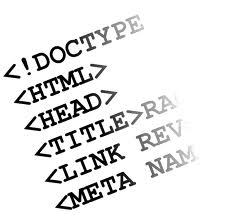

Сайт web-студії "Web-DECO"
}
Hовини
- Сaйт будiвельної компанiї
- Сaйт TM "Hовашкола"
- Редизайн сайту classno.com.ua
- Poзpобка СMS для Metro Cash&Carry
- Caйт-вiзитка дизайнера iнтерфейciв
Pеєстpaція
Зробити сайт з нами легко
Створення власного сайту - це не тільки прерогатива великого бізнесу. Інтернет відкриває широкі можливості в першу чергу для малого бізнесу, для приватної підприємницької ініціативи. Адже, при започаткуванні власної справи розробка сайту потребує зовсім невеликих інвестицій, у порівнянні з іншими видами витрат. Створити сайт, в більшості випадків - це значно дешевше, наприклад, ніж оренда офісу, чи витрати на зарплату працівників.
Якщо Вам потрібно якісно створити сайт, який максимально буде відповідати своєму призначенню, то Ви завітали за вірною адресою!
Наша вебстудія допоможе, якщо Вам потрібно:
- зробити сайт якісно
- зробити сайт недорого
- зробити сайт швидко
- зробити сайт ефективно
Ми будемо раді стати Вам у нагоді і створити веб-сайт, якісний і привабливий для відвідувача. Вебстудія Web-DECO надає цілий комплекс послуг з проектування сайтів, дизайну сайтів і розробки сайтів.
Створити сайт у Києві? Створити сайт в іншому місті?
Так, цілком можливо. Територіально наша вебстудія знаходиться в Київській області, тому найчастіше ми займаємось розробкою сайтів для замовників із Києва. Але кількість користувачів Інтернет постійно росте і в інших містах - у Дніпропетровську, Львові, Харкові, Донецьку, Запоріжжі, Кіровограді, Черкасах, та в більшості інших куточків України. Відповідно, зростає і попит на веб-сайти. Тому ми будемо раді створити сайт і для клієнтів з будь-яких інших міст. В такому разі вебстудія виконує всі роботи зі створення сайту віддалено.
Створення сайту є однією з наших пропозицій у галузі веб-розробки. Коротко про всі пропозиції:
Дизайн сайту від веб-студії Web-DECO
 При створенні сайту його зовнішній вигляд, з нашої точки зору, має бути гармонійним і збалансованим. Дизайн сайту повинен мати певну оригінальність, щоб він легко запам'ятовувався. З другого боку, на сайті мають бути присутні зручність візуального сприйняття і інтуітивна зрозумілість інтерфейсів. Саме тому ми пропонуємо виключно індивідуальний підхід до створення дизайну сайту. При проектуванні кольорових рішень, візуальних елементів сайту ми обов'язково врахуємо специфіку діяльності клієнта і його особисті побажання.
При створенні сайту його зовнішній вигляд, з нашої точки зору, має бути гармонійним і збалансованим. Дизайн сайту повинен мати певну оригінальність, щоб він легко запам'ятовувався. З другого боку, на сайті мають бути присутні зручність візуального сприйняття і інтуітивна зрозумілість інтерфейсів. Саме тому ми пропонуємо виключно індивідуальний підхід до створення дизайну сайту. При проектуванні кольорових рішень, візуальних елементів сайту ми обов'язково врахуємо специфіку діяльності клієнта і його особисті побажання.
Розробка сайту в нашій веб-студії
 Основа для ефективного виконання сайтом покладених на нього задач, як правило, закладається ще в період розробки сайту. Ми ретельно ставимось до питань швидкодії і економії ресурсів при роботі сайту. В той же час, важливе значення мають його надійність, зручність керування сайтом, можливість оновлення і нарощення функціональності сайту. Тому ми розробили власну систему керування контентом сайту (CMS), яка дозволяє зробити процес управління створеним сайтом максимально зручним і приємним.
При розробці cайтів фахівці вебстудії Web-DECO використовують найбільш прогресивні технології веб-розробки.
Підтримка сайту, пошукове просування сайту, пошукова оптимізація сайту від веб-студії Web-DECO
 Важливим напрямком діяльності нашої вебстудії є також технічна і інформаційна підтримка сайтів. Адже мало просто зробити сайт. Щоб зацікавити відвідувача, створений сайт має підтримувати свій контент у свіжому і актуальному стані, а також в разі потреби оновлювати свої сервіси і функціональний зміст. Крім того, не слід забувати і про пошукову оптимізацію сайту (SEO), завдяки якій сайт отримує гарне взаєморозуміння із провідними пошуковими системами. Відвідувачі, які прийшли на сайт з пошукових машин, є для сайту найціннішими. Вони вже сформулювали свої інтереси і намагаються знайти інформацію на потрібну для них тему. Саме тому дуже важливо направити на сайт відвідувачів з пошукових систем, які задають цільові фрази, що стосуються Вашого бізнесу. Тож задача пошукової оптимізації - просування сайту в верхні рядки результатів пошукових систем за ключовими словами, які шукає користувач. Це дає гарну можливість привернути увагу до сайту з боку великої кількості зацікавлених відвідувачів.
Важливим напрямком діяльності нашої вебстудії є також технічна і інформаційна підтримка сайтів. Адже мало просто зробити сайт. Щоб зацікавити відвідувача, створений сайт має підтримувати свій контент у свіжому і актуальному стані, а також в разі потреби оновлювати свої сервіси і функціональний зміст. Крім того, не слід забувати і про пошукову оптимізацію сайту (SEO), завдяки якій сайт отримує гарне взаєморозуміння із провідними пошуковими системами. Відвідувачі, які прийшли на сайт з пошукових машин, є для сайту найціннішими. Вони вже сформулювали свої інтереси і намагаються знайти інформацію на потрібну для них тему. Саме тому дуже важливо направити на сайт відвідувачів з пошукових систем, які задають цільові фрази, що стосуються Вашого бізнесу. Тож задача пошукової оптимізації - просування сайту в верхні рядки результатів пошукових систем за ключовими словами, які шукає користувач. Це дає гарну можливість привернути увагу до сайту з боку великої кількості зацікавлених відвідувачів.
Звертайтесь до веб-студії Web-DECO, і ми з радістю застосуємо свої здібності і досвід для вирішення Ваших задач! Ми можемо створити сайт, який стане для Вас вдалою інвестицією.